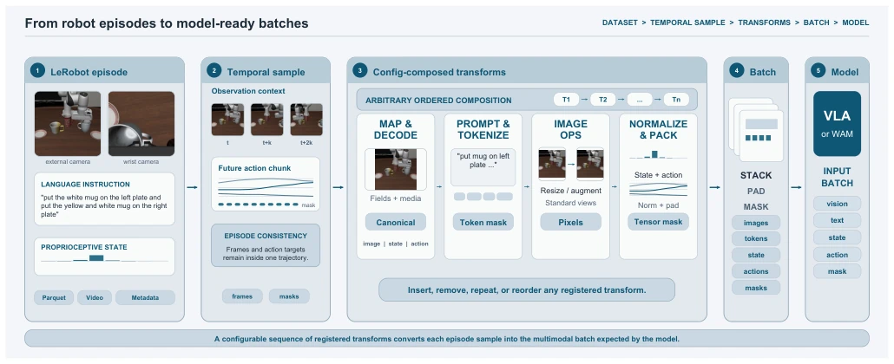
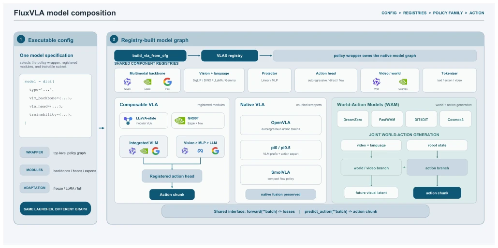
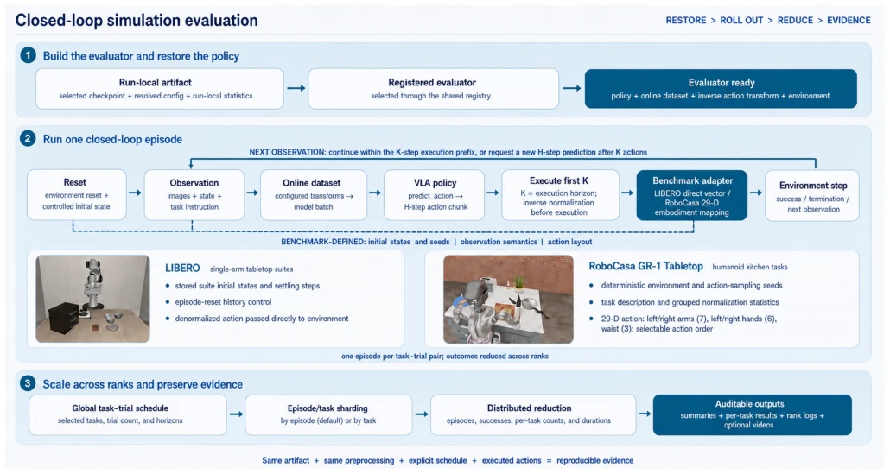
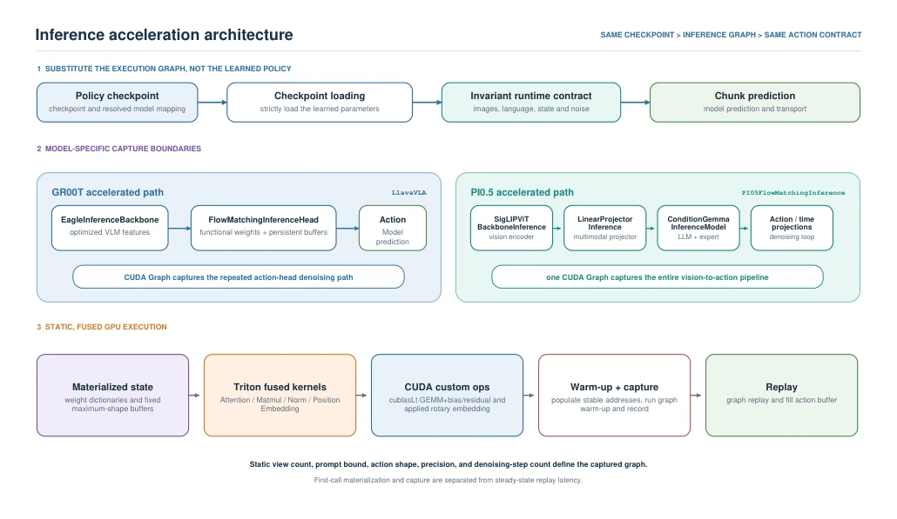
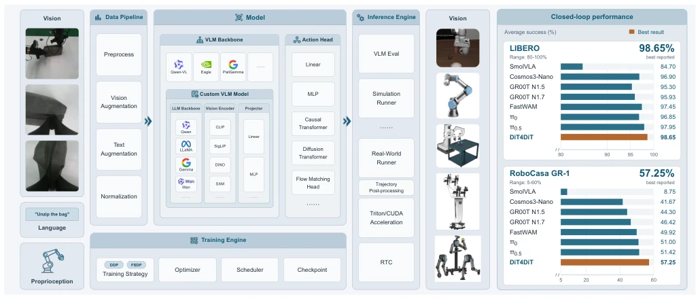
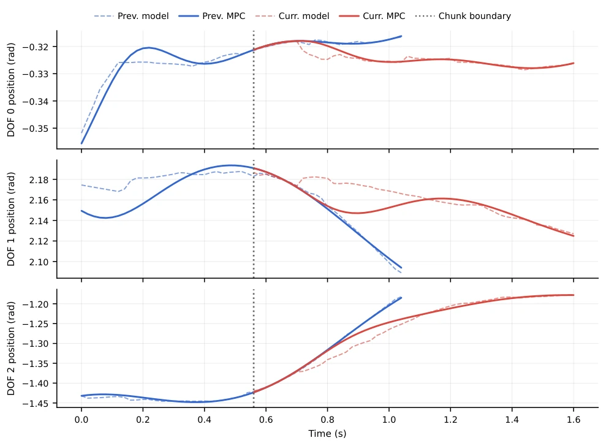

FluxVLA 这论文挺实在，没搞新模型架构，专治各种“工程不服”。它承认自己是个“胶水平台”，但粘得相当牢。优点是把 VLA、WAM 和离线 RL 的碎片化堆栈统一了，配置驱动让复现不再靠猜。缺点嘛，本质是基础设施，没解决模型本身泛化性差的问题，属于“磨刀不误砍柴工”里的磨刀人。对于只想跑通代码的工程师是福音，但对想刷 SOTA 的算法党可能觉得不够性感。它证明了工程标准化比模型微调更能决定落地速度，但也没法替代算法创新。这就像给赛车换了个更稳的底盘，但引擎还是得靠别人造。
FluxVLA is a quite practical paper; it does not pursue new model architectures but specializes in addressing various 'engineering challenges'. It admits to being a 'glue platform', yet adheres quite firmly. Its advantage lies in unifying the fragmented stacks of VLA, WAM, and offline RL, where configuration-driven design ensures reproducibility no longer relies on guessing. The downside is that, essentially being infrastructure, it does not solve the problem of poor generalization inherent to the model itself, akin to the 'axe-sharper' in the saying 'sharpening the axe does not delay the woodcutting'. For engineers who merely wish to run the code successfully, it is a blessing; however, for algorithm enthusiasts aiming to chase SOTA, it may seem not sufficiently 'sexy'. It demonstrates that engineering standardization determines deployment speed more than model fine-tuning, yet it cannot replace algorithmic innovation. This is akin to equipping a race car with a more stable chassis, while the engine still relies on others to manufacture.
Embodied AI algorithms iterate rapidly, yet engineering deployment is fraught with pitfalls. Different VLA implementations vary in assumptions; data formats, training stacks, and evaluation protocols are mutually incompatible, hindering result comparability [1]. During deployment, simulation success does not guarantee real-robot reliability; inference latency, discontinuous action chunking, and hardware interface discrepancies render algorithms 'disabled' [11]. Existing libraries such as LeRobot [9] offer tools, yet end-to-end consistency still relies on manual scripts, lacking a unified contract. FluxVLA aims to close the loop from offline training to real-robot deployment, minimizing engineering noise and allowing algorithms to focus on themselves rather than being bogged down by engineering details.
The platform is divided into four layers: Data, Model, Execution, and Deployment. The Data layer converts heterogeneous trajectories into LeRobot-compatible Parquet, unifying semantics through configuration-driven Transforms to ensure consistency between training and inference preprocessing. The Model layer is built upon a Registry, supporting decoupled Vision/Language/Action modules, compatible with native architectures such as OpenVLA [1], without enforcing a unified topology. The Training layer manages distributed strategies and Checkpoints. The Inference layer integrates Real-Time Chunking (RTC) and CUDA acceleration, supporting remote Serving. The Deployment layer adapts to different robots via Operators, implementing trajectory post-processing and action smoothing to ensure physical execution continuity. Furthermore, the platform supports self-contained inference artifacts, avoiding weight dependency issues and ensuring experimental reproducibility.

Figure 2: Configuration-driven data processing in FluxVLA. Heterogeneous trajectories are converted to one LeRobot- compatible Parquet representation containing indexed signals, video assets, schemas, tasks, and statistics. The training configuration places an ordered, freely composable transform list inside ParquetDataset; this list performs input mapping, prompting, image processing, normalization, padding, and any model-specific preparation before collation. Inference mirrors this organization with an online observation adapter and another configuration-defined transform list built from the same registry and semantic keys. Run-local statistics are reused to denormalize predicted actions.

Figure 3: Configuration-driven model composition in FluxVLA. An executable model specification selects a top-level policy wrapper and its trainability choices. The registry-driven model graph can assemble an integrated or decomposed multimodal backbone with a registered action head, while native wrappers preserve tightly coupled autoregressive, action-expert, temporal, and world–action architectures. The figure deliberately excludes the runner/engine and deployment lifecycle.

Figure 4: Closed-loop simulation evaluation in FluxVLA. A registered evaluator reconstructs the policy and evaluation setup from the selected checkpoint and run-local artifacts. For each episode, benchmark observations pass through the configured online transform pipeline, the VLA predicts an H-step action chunk, and the first K actions are inverse-normalized and sent either directly to LIBERO or through the 29-D embodiment mapping for RoboCasa GR-1 Tabletop. Benchmark-defined reset, observation, and action semantics remain confined to the evaluator. Independent task–trial episodes are sharded across ranks, reduced into aggregate and per-task metrics, and retained with structured summaries, rank logs, per-task results, and optional rollout videos.

Figure 5: Inference acceleration in FluxVLA. The training checkpoint is restored into an explicitly configured inference model with the same runner-facing action contract. The GR00T path substitutes an optimized Eagle backbone and captures the functionalized flow-matching head, whereas the π0.5 path captures the complete vision–language–action pipeline in a single CUDA Graph. Both paths use persistent buffers, Triton fusion, selected CUDA operators, warm-up and capture, followed by steady-state graph replay.
Eight policies, including SmolVLA, GR00T, and π0, were tested on the LIBERO and RoboCasa GR-1 benchmarks. The primary focus was verifying the platform's integration capability for heterogeneous models, rather than the models' own SOTA status. Results indicate that different models achieved high and stable success rates under a unified evaluation protocol, such as DiT4DiT reaching 98.65% on LIBERO. Real-robot execution demonstrated improvements in action continuity provided by RTC and post-processing. This proves the platform can effectively connect simulation and real-robot deployment, although the performance ceiling still depends on the underlying model. The platform did not propose new algorithms but eliminated evaluation bias caused by environmental differences through standardized processes, making comparisons between different models more fair and credible.

Figure 1: Overview of the FluxVLA engineering platform. Visual, language, and proprioceptive inputs enter a configurable data pipeline before reaching either an integrated VLM backbone or a custom composition of language, vision, and projector modules. Replaceable action heads connect these representations to robot actions. The training engine manages distributed strategies, optimization, scheduling, and checkpointing, while the inference engine connects evaluation, simulation, physical-robot runners, accelerated kernels, RTC, and trajectory post-processing to heterogeneous embodiments. Right: average closed-loop success for eight policies evaluated on LIBERO and RoboCasa GR-1. Orange highlights the best reported result; axes are truncated to the labeled ranges. Training and evaluation bud

Figure 6: Qualitative real-robot runtime trace of asynchronous Training-time RTC followed by joint-MPC trajectory post-processing. Dashed and solid curves denote model outputs and MPC-processed trajectories, respectively; blue and red indicate the previous and current chunks, and the dotted line marks the chunk boundary. Across three representative joints, the current MPC trajectory connects to the active previous trajectory at the handoff.